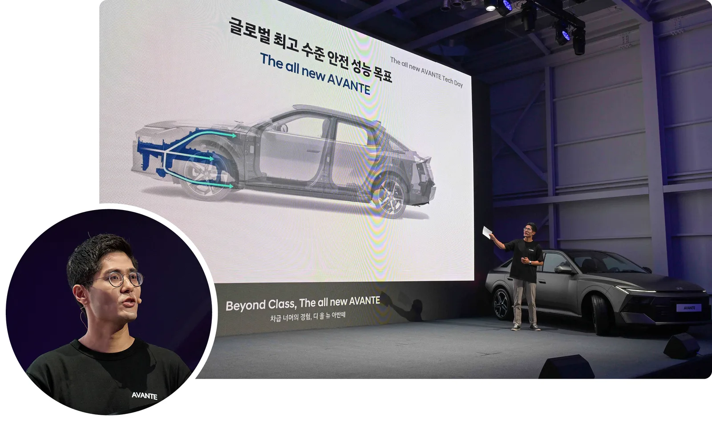
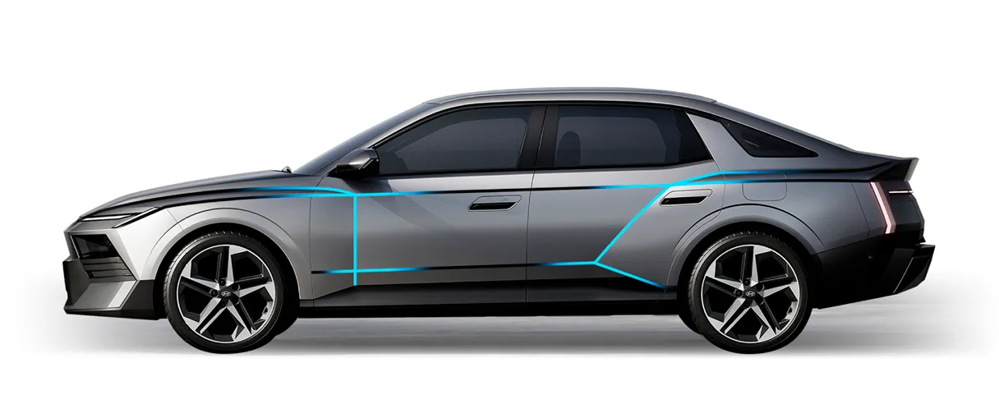
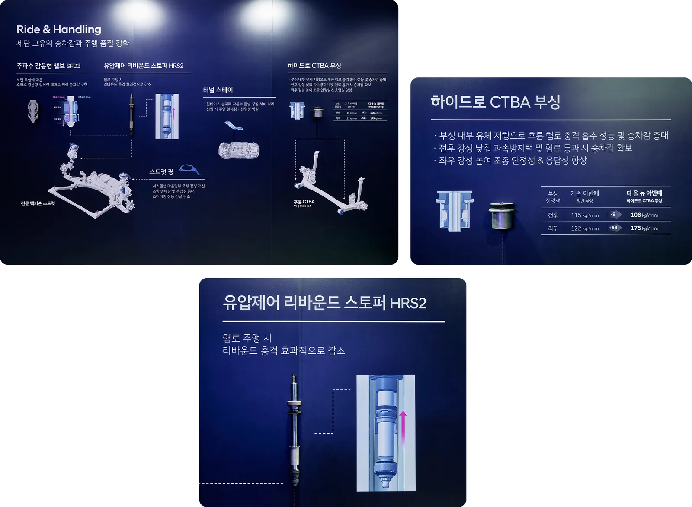

▲ 서울 아크 강남에서 열린 '디 올 뉴 아반떼 테크 데이'. 무대 위 화면에는 차체 구조와 안전 성능 목표가 함께 소개됐다
1. 디자이너 대신 연구원이 무대에 섰다
현대자동차가 서울 아크 강남에서 '디 올 뉴 아반떼 테크 데이'를 열고, 신형 아반떼의 개발 배경을 디자인·안전·주행성능·하이브리드·디지털 경험 다섯 개 분야로 나눠 소개했다. 통상 신차 발표회가 마케팅 메시지 중심으로 진행되는 것과 달리, 이번 행사는 각 분야를 담당한 책임연구원들이 직접 무대에 올라 개발 과정에서 얻은 구체적인 수치와 기술 배경을 설명하는 방식으로 꾸며졌다. 행사 슬로건은 "Beyond Class, The all new AVANTE(차급 너머의 경험, 디 올 뉴 아반떼)"였다.
현대차 측은 이번 신형 아반떼가 "단순한 디자인 변경을 넘어 차체 강성, 승차감, 정숙성, 하이브리드 시스템, 디지털 경험까지 전반적인 상품성을 크게 끌어올린" 모델이라고 강조했다. 준중형 세단이지만 상위 차급에 준하는 기술을 대거 투입했다는 점을 연구원들의 목소리로 직접 입증하려 한 셈이다.

▲ 이번 테크 데이에서 소개된 디 올 뉴 아반떼. 전폭을 1,855mm까지 넓혀 와이드 스탠스를 구현했다 ⓒ 현대자동차그룹

▲ 신형 아반떼의 후면부. H 형상 테일램프와 공력 성능을 고려한 디퓨저 디자인이 적용됐다 ⓒ 현대자동차
2. 담당 연구원별 핵심 기술 요약
| 담당 분야 | 발표 연구원 | 핵심 내용 |
|---|---|---|
| 디자인 | 이형수 책임연구원(외장디자인2팀) | 전폭 1,855mm 와이드 스탠스, '아트 오브 스틸' 언어 |
| 차체 강성·안전기술 | 황성찬 책임연구원(안전성능시험1팀) | 초고장력강 58.7%, 평균 인장강도 719MPa, 전자식 변속레버 P단 긴급제동·NSCC 2 |
| 승차감·핸들링 | 송현진 책임연구원(MSV총합시험팀) | SFD3 밸브, HRS2 스토퍼, 하이드로 CTBA 부싱 |
| 하이브리드 시스템 | 심재강 책임연구원(전동화프로젝트1팀) | 시스템 157마력, 0-100km/h 가속 5.8%↑ |
| 하이브리드 효율 | 정재환 책임연구원(MSV전동화연비시험팀) | 공기저항계수 0.26Cd, 구름저항 10%↓ 타이어, 연비 10%↑ |
| 개발 콘셉트·디지털 경험 | 황세영 책임연구원(MSV프로젝트1팀) | 플레오스 커넥트 인포테인먼트, 뱅앤올룹슨 사운드 |
📍 초고장력강과 인장강도, 왜 중요한가
초고장력강은 일반 강판보다 훨씬 높은 강도를 지닌 철강 소재로, 같은 두께라도 충돌 시 더 잘 버티면서 차체 무게 증가는 최소화할 수 있다. 인장강도는 재료가 끊어지기 전까지 버틸 수 있는 힘의 크기를 나타내는 수치로, 높을수록 차체가 더 단단하다는 의미다. 신형 아반떼는 초고장력강 비율을 기존 대비 6.1%포인트 끌어올려 58.7%까지 높였고, 평균 인장강도도 4.7% 향상된 약 719MPa를 기록해 프리미엄 대형 세단급 수준에 도달했다는 것이 현대차 측 설명이다.
3. 차체 강성 — 전방 구조물부터 다시 짰다
안전성능시험1팀 황성찬 책임연구원은 신형 아반떼가 기존 3세대 플랫폼의 강점인 전방 구조물과 다중 골격 구조를 바탕으로 차체 구조 강건성을 한층 높였다고 설명했다. 충돌 시 발생하는 하중을 효과적으로 분산하고 실내 공간의 변형을 최소화하는 데 초점을 맞췄으며, 이를 위해 차체 전체에서 초고장력강이 차지하는 비율을 기존 52.6%에서 58.7%까지 끌어올렸다. 평균 인장강도 역시 718~719MPa 수준으로 4.7% 향상시켜, 준중형 세단으로는 이례적으로 프리미엄 대형 세단급 차체 강성을 확보했다는 것이 회사 측 설명이다.

▲ 신형 아반떼의 차체 구조 보강 부위를 표시한 이미지. 전방 구조물과 다중 골격을 강화해 충돌 하중을 분산시킨다 ⓒ 현대자동차그룹
4. 승차감과 조종 안정성 — 세단 본연의 감각을 되살리다
MSV총합시험팀 송현진 책임연구원은 "세단 본연의 가치인 승차감과 조향 안정성, NVH, 운전성, 제동 성능 등 주행 상품성 전반을 균형감 있게 개발했다"고 밝혔다. 전륜에는 3세대 주파수 감응형 밸브(SFD3)와 유압제어 리바운드 스토퍼(HRS2)가 적용돼 노면 특성에 따라 최적의 승차감을 구현하고 험로 주행 시 리바운드 충격을 효과적으로 줄인다. 후륜에는 하이드로 타입 CTBA 부싱을 새로 적용해, 부싱의 전후 강성은 기존 대비 낮춰 노면 충격 흡수 성능을 높이고 좌우 강성은 122kgf/mm에서 175kgf/mm로 오히려 높여 조종 안정성과 응답성을 함께 확보했다.
핸들링 성능을 위해서는 프런트 서스펜션 마운팅부에 스트럿 링을 새로 적용하고 터널 스테이를 추가해, 서스펜션 마운팅부 국부 강성을 개선하고 선회 시 주행 일체감을 높였다. 정숙성 측면에서도 차체 패널·멤버류 보강, 2중 레이어 플로어 카펫, 흡음 타이어, 이중접합 차음 글라스 등이 두루 적용됐다.

▲ 행사장에 전시된 승차감·핸들링 기술 패널. 하이드로 CTBA 부싱은 전후 강성을 낮추고 좌우 강성은 122→175kgf/mm로 높였다 ⓒ 현대자동차그룹
5. 하이브리드 시스템 — 157마력, 연비 10% 향상
전동화프로젝트1팀 심재강 책임연구원은 신형 아반떼 하이브리드에 적용된 'SmartStream 1.6 하이브리드' 시스템을 소개했다. 3세대 1.6 GDI 엔진과 2세대 6단 DCT를 조합했으며, 배기 일체형 실린더 헤드와 연속가변 오일펌프, 350bar 고압 연료 분사 시스템을 적용해 엔진 효율을 기존 대비 약 2.9% 향상시켰다. 변속기에도 구동모터 역구동 방식의 후진 기능과 저마찰 볼베어링, 저점도 오일을 적용해 전달 효율을 0.8% 개선했다.
그 결과 시스템 합산출력은 157마력(PS)으로 기존 대비 16마력 높아졌고, 구동모터는 45kW/203Nm, 고전압 배터리는 270V/1.49kWh 사양을 갖췄다. 0-100km/h 발진 가속은 5.8%, 80-120km/h 추월 가속은 16.7% 향상됐다. 이어서 MSV전동화연비시험팀 정재환 책임연구원은 하이브리드 효율 개선 기술을 소개했다. 공기저항계수를 0.28에서 0.26으로 낮춘 공력 설계와 구름저항 10% 저감 타이어, 스마트 회생제동 3.0 등을 적용해 17인치 휠 기준 연비를 약 10% 이상 끌어올렸다는 설명이다.

▲ 신형 아반떼 하이브리드의 파워트레인 구조를 투시한 이미지. SmartStream 1.6 엔진(회색)과 구동모터(파란색)가 함께 표시됐다 ⓒ 현대자동차그룹
6. 디지털 경험과 안전 — 현대차 최초 기술 두 가지
디지털 경험 부문에서는 현대차 최초로 적용되는 기술 두 가지가 눈에 띈다. 하나는 전자식 변속 레버 P단 긴급제동 기능으로, 운전자가 스티어링 휠을 잡은 상태에서도 P 버튼 조작만으로 긴급 제동이 가능하다. 다른 하나는 내비게이션 기반 스마트 크루즈 컨트롤 2(NSCC 2)로, 고속도로는 물론 일반도로의 과속 단속 구간, 과속방지턱, 교차로에서도 자동으로 감속하는 기능이다. 여기에 차세대 인포테인먼트 시스템 '플레오스 커넥트(Pleos Connect)'와 뱅앤올룹슨(Bang & Olufsen) 프리미엄 사운드 시스템, 최대 50m까지 직전 경로를 기억하는 기억 후진 보조, 페달 오조작 안전 보조, 10개 에어백 등 안전·편의 사양이 대거 적용됐다.

▲ 계기판과 내비게이션 화면이 하나로 이어진 대형 디스플레이에 새 인포테인먼트 '플레오스 커넥트'가 탑재됐다 ⓒ 현대자동차그룹
이번 테크 데이는 신차 발표를 마케팅 언어가 아닌 엔지니어링 데이터로 설명하려 했다는 점에서 이례적이라는 평가를 받는다. 관련 발표 전문은 현대자동차그룹 공식 스토리 페이지에서 확인할 수 있다. 바로가기
✅ 신형 아반떼 테크 데이, 이것만은 확인하세요
· 서울 아크 강남에서 열린 '디 올 뉴 아반떼 테크 데이', 분야별 연구원이 직접 발표
· 초고장력강 적용 비율 58.7%, 평균 인장강도 719MPa로 프리미엄 대형 세단급 차체 강성
· SFD3 밸브·하이드로 CTBA 부싱 등으로 승차감과 조종 안정성 동시 확보
· SmartStream 1.6 하이브리드 시스템 합산출력 157마력, 정재환 연구원 발표 효율 기술로 연비 약 10% 이상 개선
· 현대차 최초 전자식 변속레버 P단 긴급제동, NSCC 2 등 디지털 안전 사양 대거 적용
7. 정리
이번 '디 올 뉴 아반떼 테크 데이'는 신차 발표회의 문법을 바꿔놓았다. 디자이너의 감성적인 언어 대신, 각 분야 연구원들이 초고장력강 비율과 인장강도, 부싱 강성 수치, 하이브리드 출력까지 구체적인 데이터로 신형 아반떼의 상품성을 입증했다. 준중형 세단이 프리미엄 대형 세단급 차체 강성과 현대차 최초의 안전 기술을 갖췄다는 점에서, 신형 아반떼가 내세우는 "차급 너머의 경험"이라는 슬로건이 단순한 홍보 문구만은 아니라는 것을 보여준 자리였다.